资源管理器打磨 · 第二轮：静态稿与拖动
t86。第一轮定了要改的范围（见页末“已定”）。这一轮的图都是在开发服务的真实工作台（样例作品“雾港”）与 Lab 场景上注入候选样式截的，没有改源码；配色是亮色。图标用 catppuccin 的 Iconify 版（@iconify-json/catppuccin，MIT，与现在的 lucide 同一种接法），亮色主题取 Latte 色，暗色取 Macchiato 色。
待定行的样子：catppuccin 彩色还是单色
两版都包含第一轮定下的三件事：按类型的文件图标；内容文件夹显示“人物”，.content 作淡色副标题、图标换成内容文件夹；只有正文的“沈屿”“林晓”没有箭头，也没有“空目录”行。左边是第一轮的现状作对照。
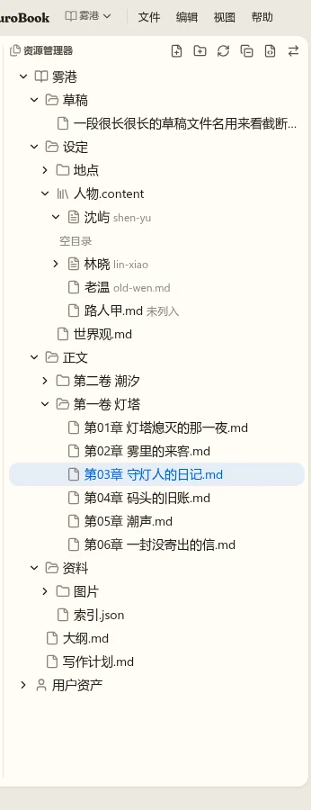
A 彩色
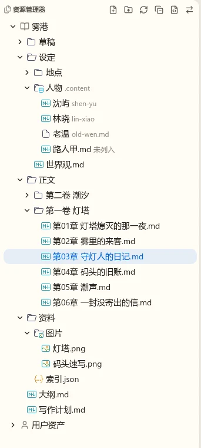
B 单色
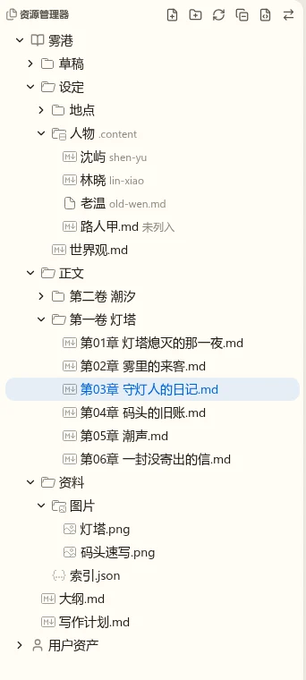
推荐 A：类型靠颜色一眼能分开，选 catppuccin 就是为了这个；整列章节都是同一个青色，不会花。B 只靠图形区分，16px 下 Markdown、文本、JSON 不容易认。
待定状态不再占一行
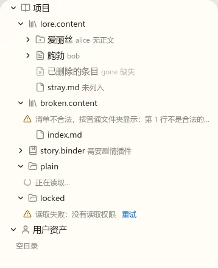
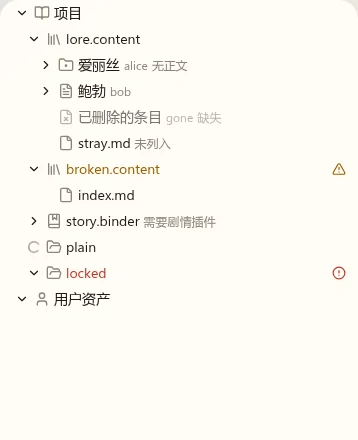
- 清单不合法：文件夹名标黄，行尾一个警告标记，悬停说明原因；子项照常按普通文件夹显示。
- 读取失败：文件夹名标红，行尾一个错误标记，点标记或右键“重试”，悬停说明原因。
- 读取中：箭头换成转圈，不加行。
- 空文件夹：展开后什么也不显示（VS Code 也是这样）。
推荐就这样。读屏仍能读到原因：标记带可访问名称，行的描述里加上状态。
待定两个根：A 还是 B
A 分节标题
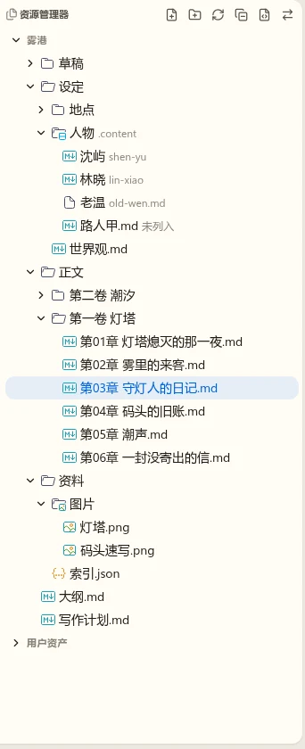
B 两个分节
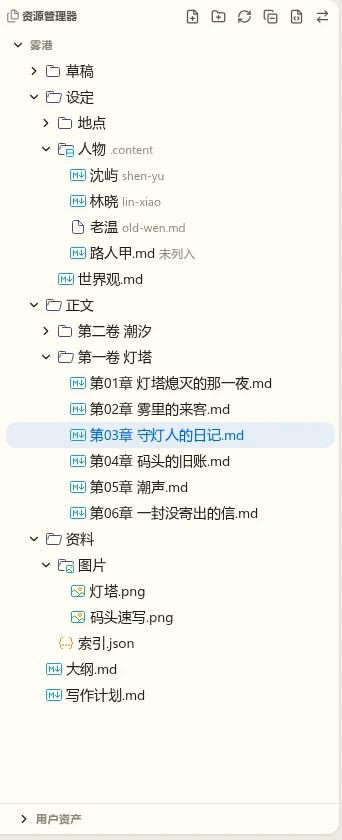
推荐 A：改动只在行的样式，键盘、选择、拖动都不变。B 解决“用户资产被挤到很下面”，但两块分别滚动、键盘在两块之间跳、拖动跨两块，都要另做；用户资产用得不多时它一直占一行。
待定过滤框放在哪里
两版行为相同：输入即过滤，保留命中项的上级目录并展开，命中的字高亮，右侧显示命中数；Esc 或 ✕ 清空，回到过滤前的展开状态。只过滤已经列出过的目录，没列出的不去读磁盘（要全量搜就用命令面板的快速打开）。
A 固定在树上方
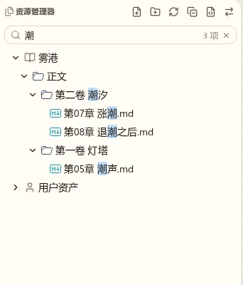
B 浮层
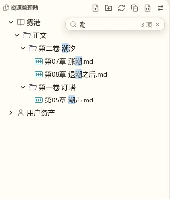
推荐 A：作者不一定知道 Ctrl+F，看得见的框更好找；它只占 32px。树有焦点时 Ctrl+F 同样聚焦到这个框。
待定缩进参考线：样子与缺省值
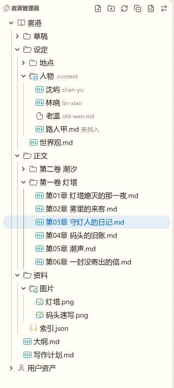
设置项三档，照 VS Code：不显示、悬停时显示（鼠标在资源管理器里或它有焦点时）、一直显示。这里选缺省值。
推荐缺省“悬停时显示”，与 VS Code 一致：平时安静，找层级时自然出现。
待定隐藏 .md：缺省值
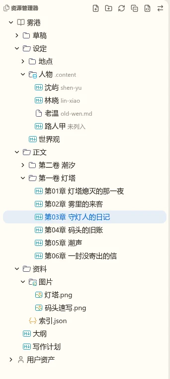
说明：VS Code 本身没有这一项（它的文件名一律完整显示），这是我们自己加的设置。打开后：改名框里仍是完整名字，悬停提示完整路径；同一文件夹里同时有 a.md 与 a 时靠图标区分。
推荐缺省显示：和磁盘上的名字一致、和别的工具一致；觉得吵的作者在设置里打开。如果你觉得作者大多不在意扩展名，选缺省隐藏也行。
待定右键菜单
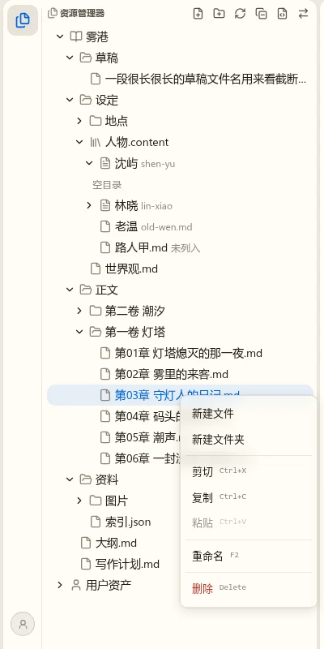
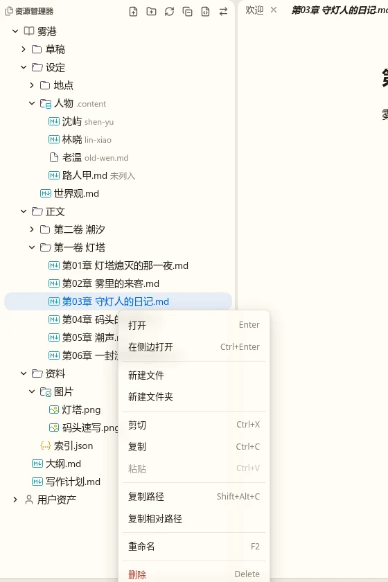
快捷键与阴影改在 nb-ui 的 ContextMenu，别处的菜单一起变。文件夹上没有“打开”“在侧边打开”，有“在此新建”。复制路径复制的是磁盘上的绝对路径，复制相对路径是相对作品目录。
待定拖动：现在、旧应用与建议
在雾港上实测了 7 种拖法（按下、拖过门槛、停在目标上看落点），并读了旧应用的拖动代码（HTML5 拖放，WorkspaceFileTree）。
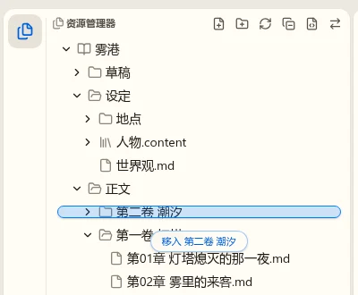
| 拖法 | 现在 | 旧应用 | 建议 |
|---|---|---|---|
| 拖到别的文件夹里的一个文件上 | 没有落点，放下什么也不发生 | 行上下画插入线，放下移到那个文件所在的文件夹 | 移入那个文件所在的文件夹；高亮整个目标文件夹的范围（VS Code），不画插入线 |
| 拖到普通文件夹里两行之间 | 没有落点 | 插入线，放到该文件夹（普通文件夹没有顺序，插入线不代表位置） | 同上：普通文件夹只说“移入哪个文件夹”，插入线只留给能排序的内容文件夹 |
| 拖到树下方的空白 | 没有落点 | 移到根 | 移到项目根 |
| 在收起的文件夹上停一会儿 | 不展开 | 不展开 | 停约 0.6 秒自动展开，好继续往里拖 |
| 拖到视图上下边缘 | 不滚动 | 浏览器自带的边缘滚动 | 靠近边缘自动滚动，越近越快 |
| 拖动时指针旁 | 只有落点标签，位置固定在目标行下方 | 浏览器的拖影（文件名） | 指针旁显示被拖的名字或“3 项”与动作；被拖的行淡化 |
| 拖到编辑区 | 没有落点 | 没有专门处理（浏览器会把路径当文字插进正文） | 在放下的那个编辑组里打开（VS Code） |
| 从系统文件管理器拖文件进来 | 不支持 | 不支持 | 这次不做，另开 Task（要上传与导入的服务端接口） |
1. 拖到文件上或两行之间：移入那个文件所在的文件夹，高亮整个目标文件夹
2. 拖到空白：移到项目根
3. 停在收起的文件夹上自动展开
4. 边缘自动滚动
5. 指针旁的拖影与源行淡化，落点标签跟着指针
6. 拖到编辑区打开
7. 从系统拖文件进来（建议另开 Task）
其它意见
拖动里你遇到、上表没列到的问题，或对哪张图的细节意见。
已定第一轮
- 缩进参考线：可选、可配置，照 VS Code。
- 普通文件夹按中文数字与阿拉伯数字的数值排序。
- 隐藏
.md：可选、可配置。 - 文件类型图标：引入 catppuccin 图标。
- 只有正文的节点不可展开；不要“空目录”“清单不合法”这种占一行的状态。
- 内容文件夹去后缀、换图标。
- 两个根要改，样式本轮定。
- 标题动作不改。
- 右键菜单要改。
- 这次做过滤框。
- 章节字数先不做。
另：拖动问题多，参考旧应用重做（本轮的拖动一节）。